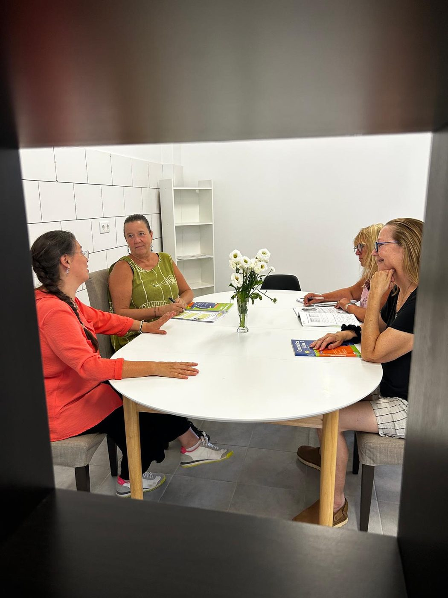
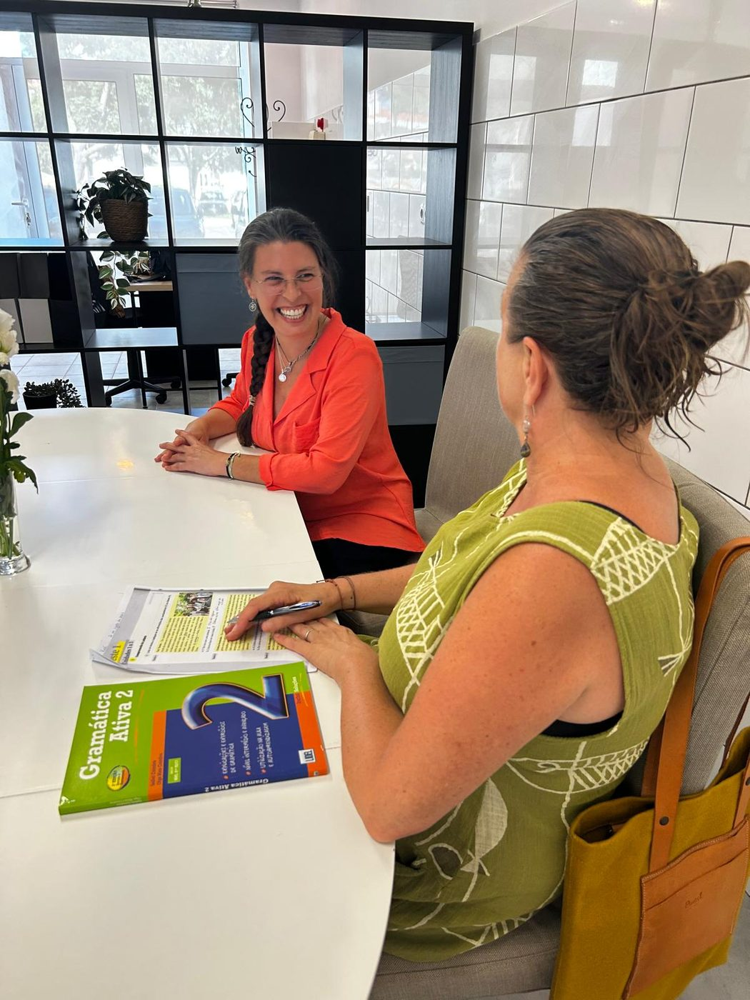
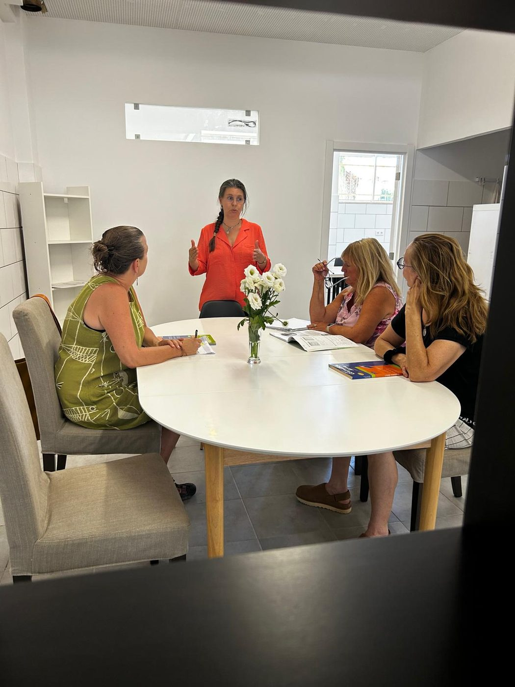
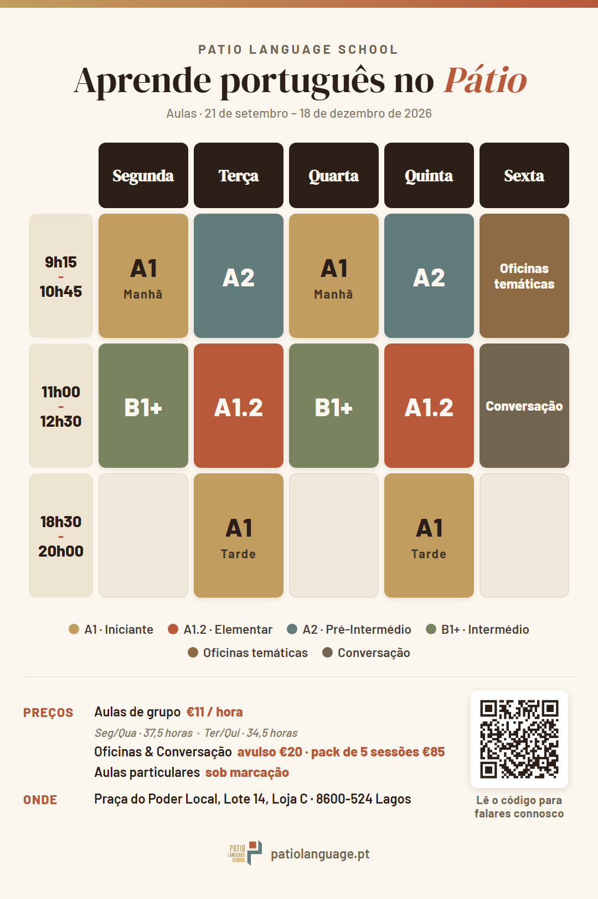
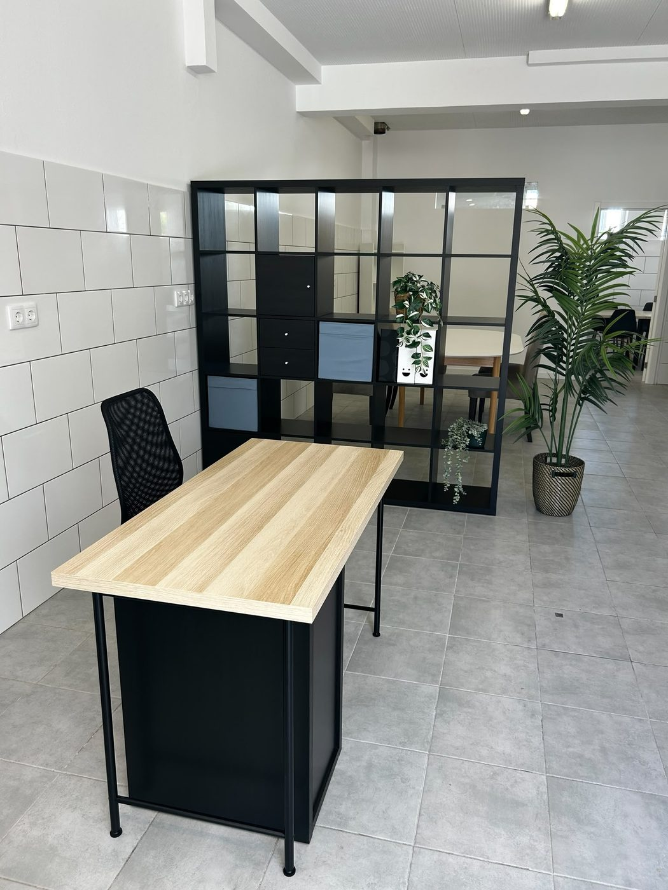
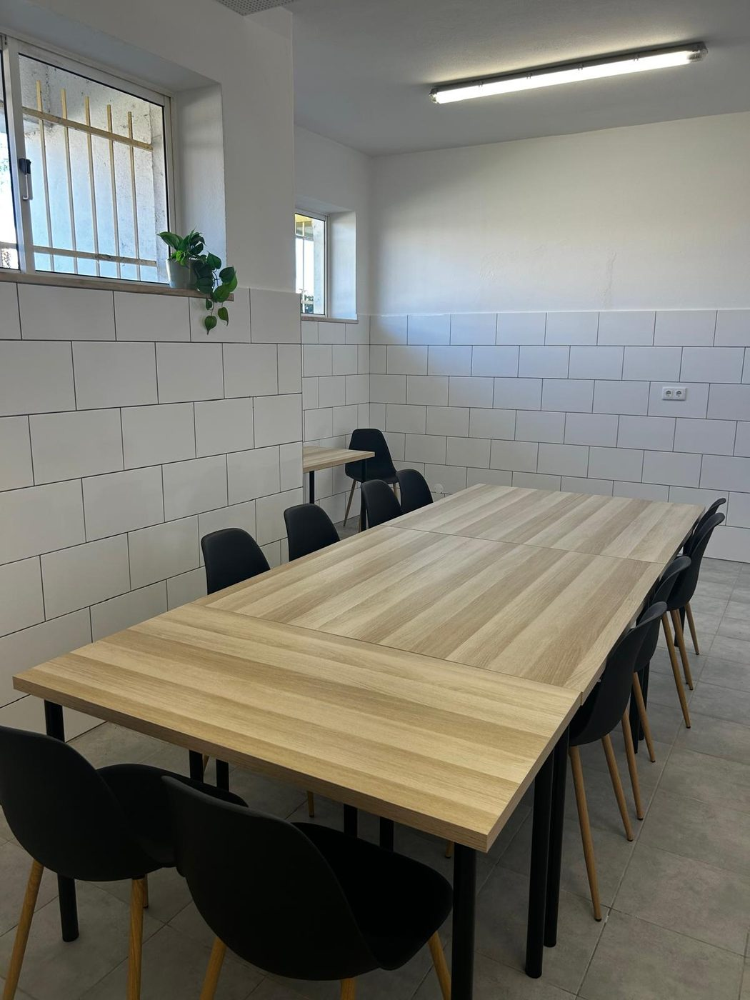
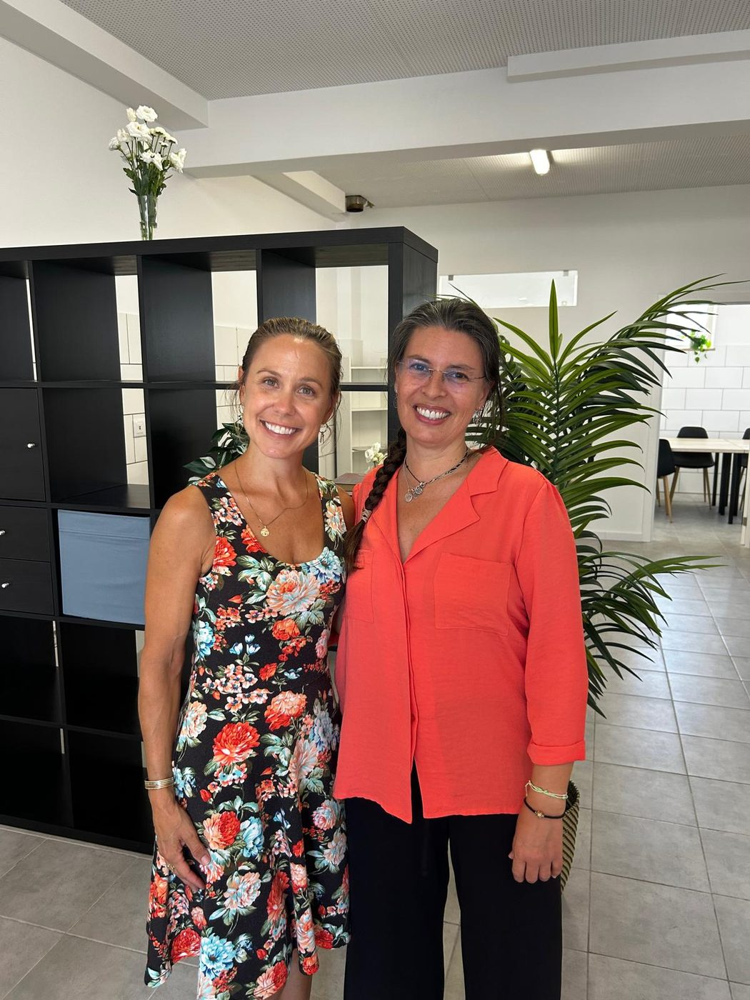
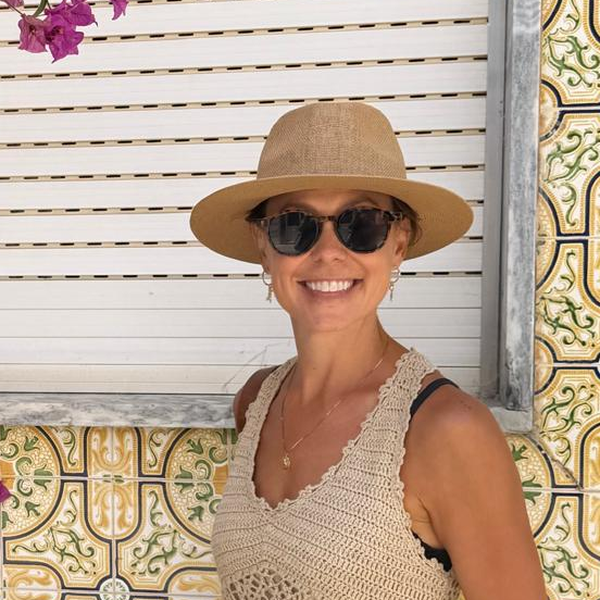

Uma nova escola de línguas e comunidade cultural em Lagos. Aprende português europeu através da conversa, da cultura e do convívio. O horário do nosso primeiro período já está definido e as inscrições estão abertas para as aulas que começam a 21 de setembro de 2026.
Ainda não te queres inscrever? Junta-te à newsletter para ficares a par:
Os exercícios de gramática só te levam até certo ponto. Na Patio Language School, vais aprender português tal como é falado: em conversa, à mesa de um café, entre amigos. Parte escola de línguas, parte comunidade cultural: o Pátio é um espaço acolhedor e caloroso em Lagos para aprender português europeu e descobrir a cultura que o rodeia, sem pressões e sem medo de errar.
Aprende entre colegas: mais conversa, mais convívio, mais diversão.
Sessões descontraídas e sem pressão, focadas na compreensão e expressão oral, com o objetivo de ganhar fluência e confiança para falar português no dia a dia.
Oficinas e eventos que dão vida à língua e que te ligam à cultura local, porque a cultura é metade da diversão.



Isto é uma semana no Pátio, de 21 de setembro a 18 de dezembro de 2026: aulas de grupo, conversação e oficinas temáticas em português europeu e, aulas particulares sob marcação. Não sabes em que nível estás? Fala connosco e descobrimos juntos.

Quer tenhas 28 ou 78 anos, chegado agora ao Algarve ou cá há anos, dividido entre este lugar e o teu país ou simplesmente apaixonado por Portugal, há sempre um lugar para ti à mesa. Encontramo-nos contigo onde estás, na cidade que inspirou esta escola.
"Um café, dois dedos de conversa e um bocadinho de gramática, por esta ordem."
A Patio Language School nasceu do desejo de aproximar pessoas através de aprendizagens com significado e experiências partilhadas que ficam na memória. Ler, escrever, ouvir e falar são os pilares do ensino de qualquer idioma, mas acreditamos que a língua só ganha vida através da conversa, da cultura e da comunidade.
O nosso pátio é mais do que um nome. É a ideia que inspira tudo o que fazemos. Um pátio é um lugar de encontro natural, aberto e tranquilo, onde as pessoas chegam sem pressa, partilham um café, uma história e uma gargalhada. Foi isso mesmo que quisemos criar: um espaço acolhedor e convidativo onde possas aprender português e entrar na cultura portuguesa com tranquilidade, sem receios nem hesitações.


A Patio Language School foi fundada por Sofia Nabais e Claire Lehto, que unem à sua formação académica a experiência real de aprender uma nova língua e construir uma vida numa cultura diferente. Juntas, transformaram esse caminho, feito de descobertas, desafios e muita partilha, num espaço onde outras pessoas podem encontrar o mesmo: acolhimento, confiança e uma nova forma de pertencer.

Sofia Nabais
Sofia lidera os programas académicos da Patio, criando cursos práticos, envolventes e enraizados no português do dia a dia. É licenciada em Matemática e possui certificação em competências pedagógicas, com muitos anos de experiência em ensino. Entre 2014 e 2023, Sofia viveu em Barcelona e Frankfurt, uma experiência que lhe deu uma compreensão profunda e pessoal do que é preciso para dominar a língua do país que nos acolhe. Desde que regressou a Portugal em 2023, dedica-se a ensinar português europeu a residentes estrangeiros e visitantes, apoiando-se na sua própria experiência no estrangeiro para ajudar os alunos a aprender uma nova língua e a encontrar o seu lugar na cultura portuguesa.

Claire Lehto
Claire lidera as operações e a experiência dos alunos na Patio, garantindo que tudo é acolhedor e bem organizado. É licenciada em Geografia Cultural pela Universidade do Texas em Austin e tem um mestrado em Administração Pública pela Bowie State University. Tendo vivido em cinco países, o percurso de Claire levou-a de apoiar comunidades de escuteiros no Alasca, a ensinar inglês online a crianças na China, até liderar programas educativos em Parques Nacionais dos EUA. Essa curiosidade e fluência cultural moldam agora a programação e a comunidade da Patio.
"Aprender uma nova língua pode ser assoberbante. A Sofia torna tudo mais fácil. É uma professora competente e paciente, que adapta as aulas ao que a turma precisa em cada momento. Gosta genuinamente de ensinar e de ver os alunos a progredir."
Nancy Lee
"Eu e a minha mulher completámos 4 meses de aulas individuais com a Sofia Nabais e recomendamo-la. Usa uma metodologia de ensino profissional, formal mas descontraída, e fala um inglês excelente."
Simon Mahon
"A Sofia representa tudo o que Portugal tem de melhor. É uma professora amável e atenciosa, que faz tudo para que as suas turmas aprendam de forma eficaz. As aulas são agradáveis e divertidas, mas também desafiantes! A pessoa perfeita para o iniciar na aprendizagem do português."
Alison e Bill Forder
"Valorizo imenso as minhas aulas individuais com a Sofia Nabais. Trabalha de forma sistemática, com ótimos materiais, e explica a gramática mais difícil com paciência e clareza. Segue de bom grado as perguntas que surgem e adora mostrar também a cultura: escritores, arquitetura, cozinha regional, concertos. Profissional e muito atenciosa, deixa-me motivado depois de cada aula."
Wolfgang Helmut Pump · Alemanha
O horário está definido e as inscrições estão abertas. Aulas de grupo, conversação e oficinas temáticas em português europeu, aqui mesmo em Lagos. Fala connosco e ajudamos-te a encontrar o teu nível e a garantir o teu lugar.
Queres reservar o teu lugar ou só tens curiosidade sobre aprender português connosco? Envia-nos uma mensagem aqui, por WhatsApp ou por email, como te der mais jeito, e ajudamos-te a encontrar o teu nível.